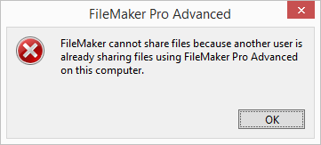
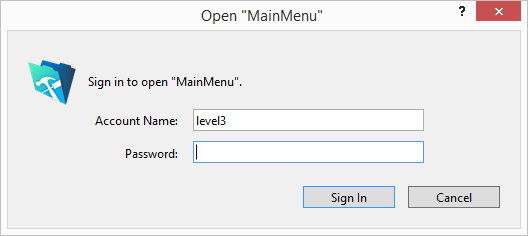
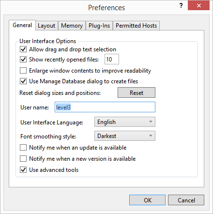
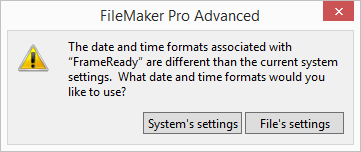

After Opening FrameReady
Congratulations! You now have at your fingertips a powerful pricing and management software: FrameReady.
Let’s get your software set up and ready for you to use!
Opening FrameReady
-
Open on a Guest or Client Computer (if you have multiple computers)
If you see this message when opening Frameready
-
A message may appear “FileMaker cannot share a file because network sharing is turned off”
-
This message can be seen on the FrameReady Trial version or on single/stand-alone installations.

Then follow these steps to stop it from re-appearing
-
On the Main Menu, click the Set Up Data button (top right).
-
Open the Network tab.
-
If you are only using FrameReady on one computer, then click the Set Files to Single User button.
Each time you open FrameReady, you must enter your Account and Password
-
If the Account Name isn't level1 , level2 , level3 or level4 then Backspace out what is there and enter your level.

-
To speed up this process, you can have the Account Name autofill (with a level of your choosing) so that you just need to enter the password.
-
If you are using receipt printers, then the Account Name should be kept as Register1, Register2, etc.
Here's how to do that in Windows:
-
Log into FrameReady with level4.
-
On the Main Menu, in the file menubar, click Perform and choose Restore Full Menus.

-
Again in the menu bar, click Edit menu and select Preferences.
-
In the User name field, enter your level, e.g. level2

Here's how in macOS:
-
Log into FrameReady with level4.
-
In the menu bar, click FileMaker Pro and select Preferences.
-
Under the General (tab), in the User Name section, click in the Other field and enter your level, e.g. level2
Note: The default Accounts and Passwords can be found at the bottom of the download and installation web page that was emailed to you.
If FrameReady looks too small
If your screen resolution is capable, FrameReady can resize to a larger view
-
Click the Auto Zoom checkbox (lower left corner). If your screen resolution is capable, then the window resizes to a larger view. If not, read these instructions or view on web: How to set up full screen view.

-
A minimum screen resolution of 1280 x 900 must be available for working with FrameReady. Higher resolutions allow for more records to be displayed when in a List View. You should not have to scroll up or down to view any of your FrameReady Form View screens.
-
On Windows, the Screen Resolution setting must be 100% for accurate results. Other values may affect the appearance of FrameReady.
-
On Windows, it is recommended that the task-bar not be set to "always be on top" of other applications. To deselect this option, do the following:
-
Click the Window's Start button > Control Panel > Task-bar & Start Menu.
-
Uncheck the Keep the Task-bar on top of other windows option.
-
Click OK.
If you see this message when opening FrameReady
-
A message may appear, “The date and time formats are different than the current system settings”, then always choose "File's Settings" -- this message will continue to appear until you change the system settings in your computer.
-
FrameReady expects dates to be formatted as MM/DD/YYY. If your computer displays dates as DD/MM/YY, then you must change how your computer formats the current date (see below).

Then follow these steps to stop it from re-appearing
-
Choose File's Settings.
-
Next, you need to change how your computer formats the current date:
frameready.com/know/file-settings-vs-system-settings
Important Next Steps
Get Familiar with FrameReady
What is critical to set up in FrameReady first?
We've prepared a Set up Overview to help guide you.
-
Most people want to get their pricing set up first. You need to determine whether or not the default formulas meet your needs in your market.
-
Start using the Work Orders right away. This will tell you whether you need to tweak the pricing formulas.
-
Then systematically go through your pricing items: moulding, matboard, mounting, glass, etc.
-
Make sure all the labor and procedures you offer, i.e. laminating, are entered as a Fitting item in the Price Codes file.
-
Moulding and matboard inventory can be set up later.
-
Enter any retail products you sell into the Products file (not available in FrameReady Lite).
-
Customer names and details can be entered as they come in and place their orders (if they were not imported from an existing customer database).
© 2023 Adatasol, Inc.